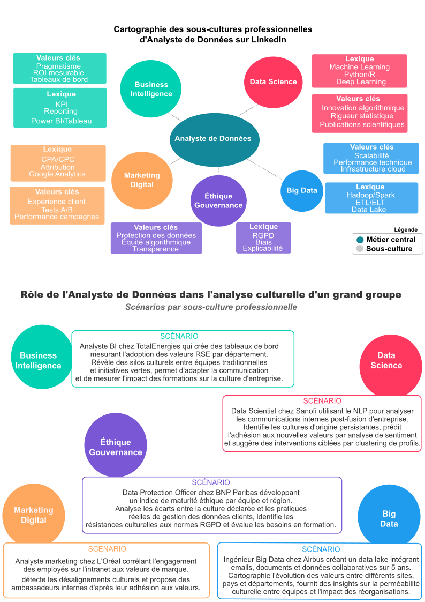
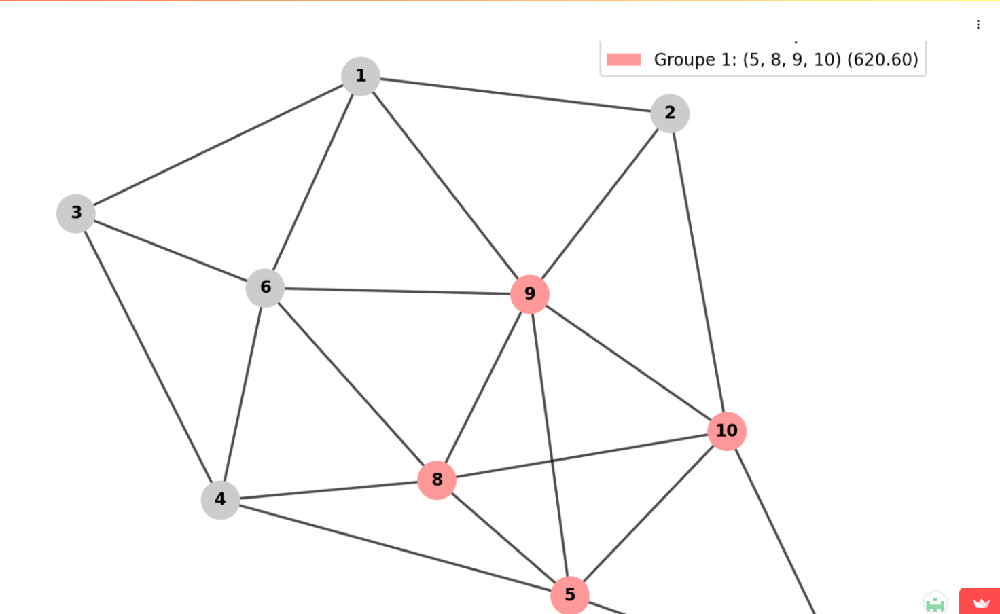

Newsletter Portfolio
11/04/2025
Découvrez mes derniers projets et réalisations dans cette newsletter hebdomadaire.
Récits visuels, horizons numériques :
Chaque newsletter, un voyage entre données, créativité et découvertes

ecriture-datastorytelling

optimisation-transport

voyages

photographie

messe-saint-gregoire

Architecture Modulaire à Base de Contenu
ecriture-datastorytelling
Écriture et Data Storytelling
Analyse Culturelle et Narration de Données
Vue d'Ensemble
L'écriture est un outil de transformation des données complexes en récits captivants, révélant les insights cachés derrière les chiffres et les tendances.
Image de Référence

Approche Méthodologique
- Transformation de données complexes en récits accessibles
- Révélation des dynamiques culturelles sous-jacentes
- Contextualisation approfondie des données
Principes Fondamentaux
- Clarté : Rendre l'information complexe immédiatement compréhensible
- Engagement : Créer une connexion émotionnelle avec les données
- Impact : Faciliter la prise de décision et la compréhension stratégique
Dimensions Clés
- Analyse rigoureuse statistique
- Contextualisation narrative
- Visualisation éloquente
- Communication stratégique
Citation Inspirante
« Les données sont des récits en attente d'être déchiffrés, des fragments d'une histoire plus large qui ne demandent qu'à être racontée. »
Compétences Principales
- Rédaction de contenus analytiques
- Data Storytelling
- Analyse de données
- Vulgarisation technique
- Communication visuelle
Approche de l'Analyse Culturelle
L'analyse culturelle dans le data storytelling va au-delà de l'interprétation statistique traditionnelle. Elle cherche à comprendre comment les données reflètent : - Les interactions humaines - Les sous-cultures professionnelles - Les transformations sociétales
Méthodologie Intégrée
- Décorticage statistique précis des jeux de données
- Ancrage des données dans un récit humain
- Traduction des insights en représentations visuelles
- Adaptation du récit aux différents publics
Domaines d'Expertise
- Articles de fond
- Contenus web
- Optimisation SEO
- Narration de marque
- Récits immersifs
- Data Visualization
optimisation-transport
Optimisation des Réseaux de Transport
Présentation du Projet
Une application interactive explorant les algorithmes de sectorisation et d'optimisation des réseaux de transport, démontrant comment l'analyse de données peut résoudre des problèmes complexes de logistique.
Objectifs
- Modélisation des réseaux de transport
- Optimisation des parcours et de la distribution
- Application des techniques avancées de traitement de graphes
Technologies Utilisées
- Algorithmes d'optimisation
- Théorie des graphes
- Analyse de données spatiales
- Python
Capture d'Écran

Lien du Projet
Explorer l'Application d'Optimisation des Réseaux
Approche Technique
Utilisation de techniques avancées de traitement de graphes pour: - Analyser les flux de transport - Optimiser les itinéraires - Minimiser les coûts et maximiser l'efficacité
Fonctionnalités Principales
- Visualisation des réseaux de transport
- Simulation de différents scénarios de sectorisation
- Analyse comparative des performances
Compétences Mises en Œuvre
- Algorithmes complexes
- Modélisation mathématique
- Analyse spatiale
- Développement d'outils d'aide à la décision
voyages
Voyages et Découvertes
Sources d'Inspiration et Explorations Culturelles

Philosophie des Voyages
Les voyages comme sources inépuisables d'inspiration, de découvertes et de compréhension interculturelle.
Approche
- Exploration attentive aux détails culturels
- Développement d'une sensibilité interculturelle
- Éveil de tous les sens
Projets et Séries
1. Série Bali Inspirations
Design Graphique et Culture
- Thème: Motifs traditionnels balinais
- Technique: Réinterprétation contemporaine
- Objectif: Fusion de l'héritage ancestral avec une esthétique moderne
Documentation Vidéo
2. Voyage Sensoriel
Exploration Multisensorielle
- Concept: La dégustation comme exploration culturelle
- Approche: Combinaison de :
- Connaissances techniques
- Sensibilité perceptive
- Contexte historique
Grille Sensorielle
- Observer
- Sentir
- Goûter
- Écouter
- Toucher
Documentation Vidéo
3. Carnets de Voyage
Narration Visuelle
- Contenu:
- Notes
- Croquis
- Photographies
- Technique: Méthode mixte
- Illustrations
- Collages
- Annotations personnelles
Documentation Vidéo
Dimensions des Voyages
- Culturelle: Immersion dans les traditions locales
- Artistique: Capture des nuances visuelles
- Personnelle: Transformation et croissance individuelle
Techniques de Documentation
- Photographie
- Illustration
- Écriture
- Enregistrements sonores
- Collecte d'objets et de matériaux
Principes Directeurs
- Observation profonde
- Respect des cultures
- Ouverture à l'inattendu
- Transformation par l'expérience
Impact
- Enrichissement personnel
- Développement d'une perspective globale
- Inspiration pour projets créatifs
- Compréhension interculturelle approfondie
Citation Inspirante
Retour en hautLes voyages sont des fragments de rêves cousus ensemble par la curiosité et l'émerveillement.
photographie
Photographie
Exploration Visuelle et Patrimoniale
Image de Référence

Blog Scientifique : ARCHAEDYN
Projet de Recherche Archéologique
- Analyse des dynamiques territoriales sur 7 millénaires
- Du Néolithique au Moyen Âge
- Techniques de pointe en analyse spatiale
Compétences Clés
- Analyse cartographique détaillée
- Études archéologiques comparatives
- Modélisation des données spatiales
- Systèmes d'Information Géographique (SIG)
Lien du Projet
Photogrammétrie : Modélisation 3D
Qu'est-ce que la Photogrammétrie ?
Technique de création de modèles 3D détaillés à partir de photographies.
Processus de Création
1. Acquisition des Images
- Prises de vue multi-angles
- Attention à l'éclairage
- Couverture complète de l'objet
2. Traitement Informatique
- Alignement des photos
- Détection des points communs
- Génération d'un nuage de points dense
- Création du maillage 3D
- Application des textures
3. Optimisation et Partage
- Nettoyage du modèle
- Simplification
- Export dans différents formats
- Publication sur des plateformes de partage
Exemples de Réalisations
1. Slit Gong
- Type: Objet ethnologique
- Objectif: Médiation culturelle
- Technique: Numérisation 3D
2. Bague à Sceau
- Type: Artefact archéologique
- Projet: Trésor d'Eauze
- Technique: Photogrammétrie
3. Bague aux Camées
- Type: Objet historique
- Projet: Documentation patrimoniale
- Technique: Modélisation 3D
Séries Photographiques
1. L'Univers des Petits Pas
- Style: Noir et Blanc
- Thème: Exploration de la petite enfance
- Technique: Documentation créative
2. Mémoire Rouillée
- Style: Archéologie industrielle
- Thème: Transformation et passage du temps
- Technique: Photographie documentaire
Technologies et Logiciels
- Agisoft Metashape
- Reality Capture
- Blender
- Photoshop
- Techniques avancées de traitement d'image
Philosophie Photographique
Capturer l'essence des moments, des objets et des espaces, en révélant leurs histoires cachées à travers l'image.
Retour en hautmesse-saint-gregoire
Patrimoine Numérique : La Messe Saint Grégoire
Présentation du Projet
Un projet de valorisation du patrimoine culturel associant photographie, rédaction de contenus historiques et conception d'expériences interactives pour rendre accessibles des trésors culturels.
Objectifs
- Préservation et médiation culturelle
- Création de ponts entre tradition et innovation
- Exploration numérique du patrimoine historique
Technologies Utilisées
- Modélisation 3D
- Recherche Historique
- Médiation Culturelle
Capture d'Écran

Lien du Projet
Consulter La Messe Saint Grégoire
Description Détaillée
Cette initiative démontre comment les technologies numériques peuvent servir la préservation et la médiation culturelle, en transformant un élément patrimonial en une expérience interactive et accessible.
Approche
- Documentation visuelle approfondie
- Contextualisation historique
- Création d'une expérience numérique immersive
Compétences Mises en Œuvre
- Photographie documentaire
- Recherche historique
- Conception d'expériences interactives
- Médiation culturelle numérique
Architecture Modulaire à Base de Contenu
Architecture Modulaire à Base de Contenu
L'Architecture Modulaire à Base de Contenu (ou "Content-Driven Modular Architecture") représente une approche moderne et flexible pour concevoir des sites web et des applications. Cette méthodologie place le contenu au centre du processus de développement, en le séparant strictement de la présentation.
Mots-clés: développement, architecture, contentdriven, méthodologie, applications
Principes fondamentaux
Cette architecture repose sur plusieurs principes clés qui la rendent particulièrement efficace pour les sites riches en contenu comme les portfolios et les blogs :
Mots-clés: architecture, portfolios, principes, plusieurs
Le contenu est stocké dans des fichiers indépendants (souvent au format Markdown) avec des métadonnées standardisées (frontmatter), complètement séparés du code HTML, CSS et JavaScript qui définit leur présentation. Cette séparation permet à chaque aspect d'évoluer indépendamment.
Mots-clés: standardisées, indépendance, présentation
Les sections et composants peuvent être facilement réutilisés, réorganisés ou recombinés pour créer de nouvelles pages ou expériences. Cette flexibilité permet d'assembler rapidement différentes vues à partir des mêmes éléments de base.
Mots-clés: expériences, réorganisation, flexibilité
Modifier un contenu n'exige pas de toucher au code HTML principal. Les rédacteurs de contenu peuvent se concentrer uniquement sur les fichiers Markdown pertinents, sans risquer d'altérer la structure ou le fonctionnement du site.
Mots-clés: fonctionnement, pertinents, concentrer, uniquement, rédacteurs
Ajouter une nouvelle section est aussi simple que de créer un nouveau fichier Markdown. Cette approche réduit considérablement la friction pour enrichir le site avec de nouveaux contenus.
Mots-clés: contenus
Implémentation pratique
Pour les composants simples, le Markdown pur suffit généralement. Cependant, pour les composants plus complexes comme les grilles de compétences, les cartes de services, ou les processus multi-étapes, l'HTML embarqué dans Markdown offre le meilleur compromis :
Cette approche hybride permet de préserver le rendu visuel des composants complexes tout en profitant pleinement de la modularité du système.
Mots-clés: multiétapes, compétences, composants, markdown, modularité, composants, complexes
Avantages à long terme
Au-delà des bénéfices immédiats, cette architecture offre des avantages substantiels sur le long terme :
- Transitions technologiques facilitées - Le contenu peut être conservé même si le framework ou la technologie de présentation change
- Versionning efficace - Les modifications de contenu sont clairement visibles dans les commits Git
- Possibilités de migration accrues - Le contenu peut être facilement exporté vers d'autres systèmes
- Optimisation du workflow - Les designers et développeurs peuvent travailler sur l'interface pendant que les rédacteurs créent le contenu
Cette architecture représente une évolution naturelle des systèmes de gestion de contenu traditionnels, offrant davantage de flexibilité tout en conservant une structure claire et organisée.
Mots-clés: architecture, flexibilité
1. Séparation du contenu et de la présentation
Le contenu est stocké dans des fichiers indépendants (souvent au format Markdown) avec des métadonnées standardisées (frontmatter), complètement séparés du code HTML, CSS et JavaScript qui définit leur présentation. Cette séparation permet à chaque aspect d'évoluer indépendamment.
Mots-clés: indépendance, standardisés, présentation
2. Composabilité
Les sections et composants peuvent être facilement réutilisés, réorganisés ou recombinés pour créer de nouvelles pages ou expériences. Cette flexibilité permet d'assembler rapidement différentes vues à partir des mêmes éléments de base.
Mots-clés: flexibilité
3. Maintenabilité
Modifier un contenu n'exige pas de toucher au code HTML principal. Les rédacteurs de contenu peuvent se concentrer uniquement sur les fichiers Markdown pertinents, sans risquer d'altérer la structure ou le fonctionnement du site.
Mots-clés: pertinents, rédacteurs
4. Évolutivité
Ajouter une nouvelle section est aussi simple que de créer un nouveau fichier Markdown. Cette approche réduit considérablement la friction pour enrichir le site avec de nouveaux contenus.
Mots-clés: enrichir, contenus
Retour en haut